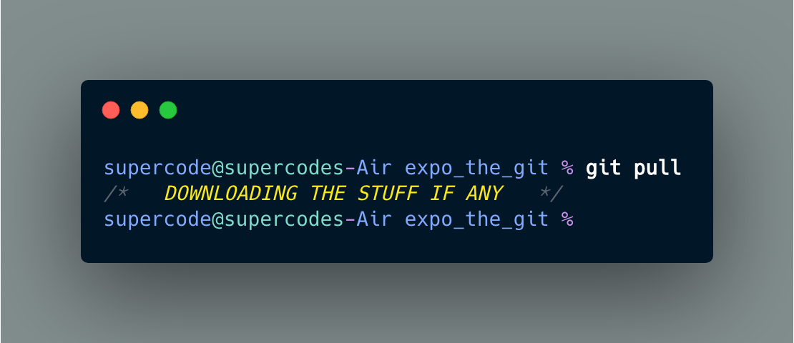

GIT INIT
command creates a new Git repository. It can be used to convert an existing, unversioned project to a Git repository or initialize a new, empty repository. Most other Git commands are not available outside of an initialized repository, so this is usually the first command you'll run in a new project.
CREATES A NEW REPOSITORY!
GIT ADD
adds file or files to the staging area
CHANGES SUGGESTION
GIT COMMIT
creates a new commit containing the current contents of the index and the given log message describing the changes. The new commit is a direct child of HEAD, usually the tip of the current branch, and the branch is updated to point to it
ACCEPT THE CHANGES FROM git add
GIT REMOTE
The remote command helps you to manage connections to remote repositories. It allows you to show which remotes are currently connected, but also to add new connections or remove existing ones.
TRACK THE REPOS
GIT PUSH
updates remote refs using local refs, while sending objects necessary to complete the given refs.
UPDATE GITHUB

GIT LOG
List commits that are reachable by following the parent links from the given commit(s), but exclude commits that are reachable from the one(s) given with a ^ in front of them. The output is given in reverse chronological order by default.
SHOWS THE COMMIT LOGS
GIT PULL
..is a Git command used to update the local version of a repository from a remote. It is one of the four commands that prompts network interaction by Git.
DOWNLOADING THE REPO
GIT STATUS
Displays paths that have differences between the index file and the current HEAD commit, paths that have differences between the working tree and the index file, and paths in the working tree that are not tracked by Git
MOST USEFUL TOOL - SHOWS THE WORKING TREE